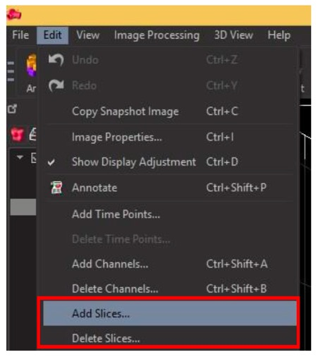
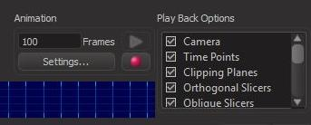

PART 3: VIEWING YOUR DATA
Navigating Within Your Images
In Surpass Viewing Mode you can navigate around your 3D and 4D images (move and rotate) by clicking and dragging when the cursor is in navigate mode (it will look like two curved arrows when you hover over the image).
If the cursor is in section mode (normal single straight arrow when hovering over image) this will not work. You can switch between selection and navigation by hitting Escape on your keyboard, or using the Pointer selection buttons in the top right corner of the Imaris window.
When navigating your image, if you stop dragging before you release the mouse button, the image will also stop moving. However, if you release the mouse button while continuing to drag the image it will continue to rotate automatically. Rotation will be on the angle and at the speed that you were dragging the image. To stop this continuous rotation, click on the image.
You can easily zoom in on your image using the scroll wheel on your mouse. Scroll up to zoom in and scroll down to zoom out. To visualise where you are in the original image while zoomed in, open the Navigate window by clicking the Navi icon on the bottom left of the Imaris window.
This will display a smaller version of the original image with a yellow outline demonstrating your current position in the image.
You can easily return the image to its original orientation and zoom at any time by clicking the Fit and Reset icons from the panel in the bottom left of the Imaris window.
In Surpass 3D viewing mode images are displayed with a surrounding grid, or frame. You can turn this grid on and off by checking the box next to Frame in the right hand panel (analysis and selection tools) of the Imaris window, under Scene.
Viewing Time Data
When viewing 4D (time series) data you can navigate through time points using the slider at the bottom of the Imaris window.
To play continuously, click the small black arrow, or play button in the panel. To move one frame forward of backwards in the series use the Skip buttons. You can monitor your position through the series in the Time Bar.
Adding and Deleting Channels
You can alter the channels in your images by using the Add Channels or Delete Channels tools.
This can be useful if your channels were captured as separate images or if you have an empty channel in a multi-channel file.
To add a channel to your image go to Edit -> Add Channel… (or use shortcut Ctrl + Shift + A). To remove channels go to Edit -> Delete Channels… (or use shortcut Ctrl + Shift + B).
To add a new file as a channel in your image, choose the file from the explorer window and click OK. When deleting channels, select the channel(s) you want to delete from the image and click Open.
Adding or Deleting Slices
You can also add or delete slices from a z-stack or 3D image.
This can be useful if you have over sampled and have blank sections above or below your cells of interest in the z-stack.
Go to the Edit menu and select the option you require; Add Slices… or Delete Slices.

This works in the same way as adding and deleting channels.
Slices can be adding by selecting a file containing the next set of z-slices, then click Open.
Delete by entering the number of the section(s) you wish to delete from the z-stack in the resulting window and click OK.
Orthoslicer
Orthoslicer is a tool found in the left hand side selection and analysis tools panel. Click on the Orthoslicer icon, it will appear as a layer in the scene, which you can turn on and off using the checkbox.
You can use the orthoslicer to navigate through the 3D image in xy, yz or xz. Select the orientation from the options, which will open in the bottom of the selection and analysis tools panel.
You can also change the thickness of the slicer and turn the orthoslicer frame on or off in the image.
You can move the orthoslicer through the image using the slider for Slice Position at the bottom of the panel.
As you move through the image you will see only what is above the orthoslicer within the image.
Examples of a 3D image with and without the orthoslicer are shown below
Orthoslicer Off:
Orthoslicer On:
Snapshots
At any time you can capture a snapshot of the image on your screen using the Snapshot tool. Select Snapshot from the main menu panel.
You can adjust your original image in the main window to the orientation you need and make any adjustments.
You will see a preview of the final image in the Snapshot panel.
Check the box next to Crop to fill whole snapshot area to zoom the image to fill the entire space.
When you are happy with the image, input the resolution options for your final image into the Image Size section of the Snapshot panel.
Chose Save to File or Copy to Clipboard. If you chose to save to file, input your destination folder by clicking on the … icon. Select your folder from the explorer window and name the image.
To capture the snapshot, click Do Snapshot!
Movies and Animations
You can save movies, or animations, of your 3D images with a number of different actions. To start the animation capture select Animation from the main icon menu.
This will open the animation options and recording bar at the bottom of the Imaris window.
Here you can add animation frames for rotations from the pull up menu options. For other animations such as zooming, or using orthoslicer you will need to perform these during recording.
Set the number of frames you want to record and ensure any options you want included are selected under Playback Options.

When you are ready to record your animation, click the Record button (red circle) on the animation bar. Select your location to save the movie file and click OK.
If you have added rotation options from the menu it will create this animation automatically. To record other movements, you must perform these yourself now as it records.
The recorded movie will be saved in your selected location and open and play automatically once it is complete.
Saving Options
You can save your changes to files in Arena by selecting Store (Shortcut Ctrl + S) from the File menu.
Store As will allow you to store changes to Arena under a new file name.
Use the Export option (Shortcut Ctrl + E) to save directly to a folder on the hard drive.
Note that Imaris likes to save in its own format (.ims). Selecting an Imaris file type from the options listed when saving will provide the most accurate version of your image. Imaris files can be opened in FIJI using bio-formats importer, configured for .ims files.
Selecting .tif will save each slice in your image as an individual file, although time series will give you the option to save all as a single file. Ensure the single file box is selected when saving time series as Tiffs.
You can also use the icons on the main panel for Store and Export options.